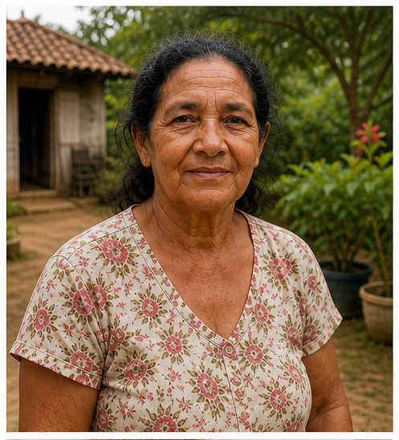
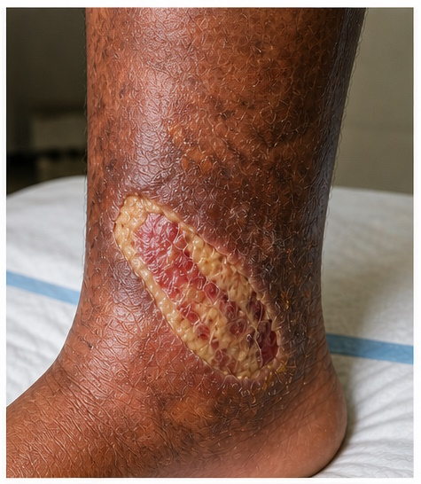
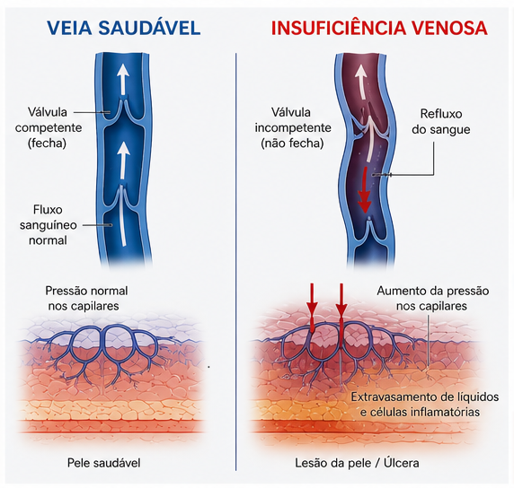
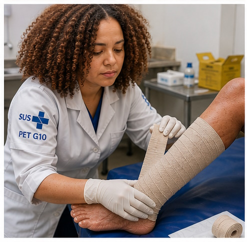
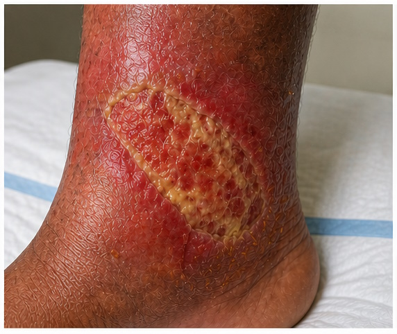
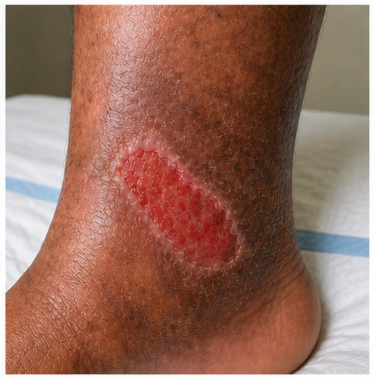

"É preciso ter força,
é preciso ter raça,
é preciso ter gana sempre."
Quem é Maria
Maria tem 68 anos. Passou a vida inteira em pé — na roça, no fogão a lenha, na beira da horta. Carregou peso, andou léguas descalça, trabalhou sem parar desde os doze anos. Criou três filhos sozinha depois que o marido foi embora, e hoje cuida da neta Lúcia, de oito anos, que mora com ela desde pequena.
A ferida apareceu na perna esquerda faz dois anos. No começo era só uma mancha marrom, um coceiro. Depois abriu. Maria não contou pra ninguém de início — achou que era coisa de pele velha, que ia passar. Quando a neta começou a perguntar sobre o "machucado", Maria dizia: "Isso não é nada, minha filha. Já vi coisa pior."

- Idade: 68 anos · sexo feminino · zona rural
- Histórico: 3 gestações · trabalho em pé por décadas · HAS leve
- Localização da lesão: terço inferior da perna esquerda, região maleolar medial
- Tempo de lesão: ~24 meses antes do primeiro atendimento especializado
- Queixa: dor latejante ao final do dia, edema vespertino, prurido, odor discreto
- Classificação CEAP: C6 — úlcera venosa ativa
"Quem caminha no sol
com vontade de aprender
a lição que a vida traz."
O Dia que a Lúcia Avisou
Foi a neta quem fez Maria ir ao posto. Lúcia voltou da escola com um papel que falava sobre o "Projeto Saúde na Roça" — o agente comunitário passaria pela comunidade naquela semana. Maria não quis ir. Lúcia teimou.
A enfermeira viu a ferida pela primeira vez numa sala com cheiro de café e bagunça de papéis. Tirou a meia devagar. A úlcera media 5,5 × 4 cm — base com tecido desvitalizado, esfacelo amarelado, exsudato sero-purulento moderado, bordas irregulares com lipodermatoesclerose. A pele ao redor estava hiperpigmentada, cor de ferrugem, dura. Maria nem lembrava mais como era a perna antes.

- Índice tornozelo-braquial (ITB): 0,97 — componente arterial descartado
- Dor latejante, piora ao ficar em pé, melhora ao elevar a perna → padrão venoso
- Edema vespertino bilateral, varicosidades visíveis nas duas pernas
- Ausência de neuropatia periférica — sensibilidade preservada
- Teste do monofilamento: normal
- Glicemia de jejum: 98 mg/dL — diabetes excluído
A enfermeira olhou para Maria e disse com calma: "A senhora não falhou. A ferida apareceu porque as veias da perna não estão devolvendo o sangue direito. O corpo da senhora pediu socorro — e a gente chegou."
"A dor que ela carrega
no olhar que ela tem
vem de um povo que não ri."
O Que a Ferida Carregava
Úlcera venosa crônica não é só uma ferida na pele. É o resultado visível de um processo que acontece nas profundezas — nas válvulas das veias que deixaram de funcionar, na pressão que se acumulou por anos, no sangue que ficou represado quando deveria circular.
Nas veias saudáveis, válvulas unidirecionais empurram o sangue de volta ao coração. Quando essas válvulas falham — por gestações, por trabalho em pé, por predisposição genética — o sangue reflui e fica parado nos capilares. A pressão aumenta. O líquido vaza para os tecidos. A pele endurece, muda de cor, perde nutrição. E então abre.

- Hipertensão venosa → extravasamento de fibrinogênio → manguitos de fibrina ao redor dos capilares
- Hipóxia tecidual → ativação de leucócitos → inflamação crônica local
- Lipodermatoesclerose: fibrose progressiva do tecido subcutâneo
- Ferida travada na fase inflamatória → cicatrização bloqueada⁴
"Não é fraqueza que faz a ferida abrir. É a força que a vida cobrou por décadas, sem oferecer retorno."Narrativa clínica · G10 Feridas Crônicas · UFPel
"Mas é preciso ter manha,
é preciso ter graça,
é preciso ter sonho sempre."
O Plano — e a Resistência
O tratamento começou com desbridamento mecânico e limpeza do esfacelo. A cobertura escolhida foi espuma de poliuretano com prata — para controle do exsudato moderado e da contaminação residual. E então veio a parte mais importante — e mais difícil.
A terapia compressiva. A bota de compressão precisaria ficar na perna de Maria por dias — uma meia longa, apertada, quente. Maria olhou para aquilo como se fosse uma armadilha. "Eu não vou conseguir trabalhar com isso, moça. Tenho horta, tenho galinha, tenho Lúcia pra buscar na escola."
A compressão não é detalhe nem conforto: é o tratamento. Sem ela, a pressão venosa não cai, o edema não regride, a ferida não fecha — por melhor que seja qualquer curativo. A enfermeira sabia que a conversa com Maria era tão importante quanto a técnica.

- Limpeza: soro fisiológico 0,9% em jato, temperatura ambiente
- Desbridamento autolítico com hidrogel nas primeiras semanas
- Cobertura primária: espuma de poliuretano com prata (troca 2×/semana)
- Compressão: bota de 4 camadas — pressão de sustentação 40 mmHg
- Elevação da perna: 3 períodos de 20 min/dia
- Orientação nutricional: proteína, zinco, vitamina C
A negociação levou três consultas. No fim, Maria aceitou a bota — mas só se a enfermeira viesse duas vezes por semana à comunidade, para ela não precisar sempre ir à cidade. O agente comunitário seria o elo. Lúcia, sem saber, seria a guardiã: ela passou a lembrar a avó de elevar a perna à tarde, enquanto assistiam televisão juntas.
"Que andar no escuro
sem se perder."
O Mês que o Inverno Chegou
Na semana oito, a enfermeira chegou e encontrou a bota enrolada num canto. Maria estava de pé na cozinha — tinha chovido cinco dias seguidos, a venda perto havia fechado, e ela precisava ir buscar mantimentos em outro lugar. "Com essa bota não dá, você não entende, moça. Atolou o caminho todo."
A ferida havia crescido: 6,8 × 5 cm. A pele perilesional estava eritematosa, quente. Exsudato purulento. Odor. A infecção havia instalado.
- Aumento do exsudato, consistência purulenta, odor fétido
- Eritema perilesional > 2 cm — celulite instalada
- Temperatura local elevada, dor aumentada
- Swab: Staphylococcus aureus sensível à oxacilina
- Condutas: antibioticoterapia oral + troca de cobertura para alginato de cálcio + prata

A reunião de equipe foi longa. O médico queria internar. A enfermeira argumentou que Maria não iria — ela não largaria Lúcia. Decidiram juntos: tratamento ambulatorial intensivo, visitas diárias por cinco dias, antibiótico oral, e — depois de muita conversa — um par de botas de borracha que o agente comunitário conseguiu emprestado de uma ONG parceira, que Maria poderia usar por cima da compressão nos dias de chuva.
A adaptação foi pequena. O efeito, enorme.
Eritema perilesional regressou. Exsudato voltou a seroso. Ferida reduziu para 5,2 × 3,8 cm — resposta à antibioticoterapia e retomada da compressão. Maria passou a usar as botas de borracha por cima da bandagem nos dias de chuva. A equipe registrou: adaptação ao contexto funcionou onde o protocolo rígido havia falhado.
"É uma flor que vai nascer
no asfalto — que vai brotar."
Quando o Tecido Começou a Responder
Semana doze. A ferida media 4 × 3 cm. O leito estava vermelho-vivo — granulação ativa, friável, saudável. As bordas tinham pequenas ilhas rosadas de epitelização. O exsudato era seroso, reduzido. Sem odor.
Maria chegou à consulta e, antes de sentar, disse: "Eu tô achando que tá melhorando. A Lúcia falou que parece menor." Era a primeira vez que ela falava da ferida com esperança.

Granulação avermelhada e friável — tecido vivo e ativo. Epitelização nas bordas: queratinócitos migrando do perímetro para o centro. Exsudato seroso e reduzido. Sem eritema perilesional. Edema diminuindo — Maria relatou que a perna pesava menos à noite.
A cobertura foi trocada para hidrofibra simples — o exsudato havia diminuído, a prata não era mais necessária. A compressão seguiu firme. A Lúcia, que acompanhava as consultas nas férias escolares, ficou tão curiosa que a enfermeira começou a explicar o processo para ela também — "para quando você crescer e quiser cuidar da avó."
"É uma Maria, Maria,
mistura da dor e alegria."
A Perna de Maria, Fechada
Semana vinte e oito. A ferida fechou. A enfermeira registrou no prontuário: epitelização completa, bordas integradas, sem sinais de infecção, sem exsudato. Do lado de fora, escreveu uma nota à mão e deixou dentro do prontuário de Maria: "Obrigada por não desistir."
Maria não chorou na consulta. Chorou em casa, sozinha, depois que a Lúcia dormiu. Não de alívio — de raiva, ela disse depois. "Eu fico brava de ter esperado dois anos pra procurar ajuda. Que besteira que eu fiz."
A enfermeira, quando soube, respondeu: "A senhora não fez besteira. A senhora sobreviveu com o que tinha. Agora a gente vai trabalhar pra que a ferida não volte."
28 semanas. Uma perna inteira. Uma mulher de pé.
O desfecho de Maria não é o fim da história — é o começo do seguimento. Recorrência: cerca de 57% em 1 ano e até 78% em 3 anos sem seguimento adequado. A compressão continua. As visitas continuam. A Lúcia continua vigiando.
Com uma recaída no meio do caminho — superada com adaptação, não com protocolos rígidos.
Por isso a alta não é o fim. Maria agora usa meia de compressão 20–30 mmHg diariamente e retorna a cada dois meses.
A crise da semana 8 foi tratada ambulatorialmente, com criatividade da equipe e escuta real do contexto de vida de Maria.
Lúcia virou aliada da equipe sem saber. O vínculo familiar como recurso terapêutico — subestimado, essencial.
Classificação CEAP — Doença Venosa Crônica
Sistema internacional para estadiar a gravidade clínica da doença venosa crônica e orientar a conduta terapêutica.
Sem sinais visíveis de doença venosa.
Telangiectasias ou varizes reticulares.
Varizes tronculares visíveis.
Edema venoso sem alteração cutânea.
Hiperpigmentação, lipodermatoesclerose ou eczema.
Úlcera venosa cicatrizada.
Úlcera venosa ativa — estágio de Maria na chegada.
O que Maria ensina
A ferida não escolhe quem trabalhou mais
Cerca de 32% das mulheres têm varizes tronculares clinicamente identificáveis — e o trabalho em pé por décadas é um fator de risco que o sistema de saúde raramente pergunta na anamnese.²
A compressão é o tratamento — não o acessório
Nenhuma cobertura avançada substitui a redução da pressão venosa. Sem compressão, a ferida pode melhorar, mas não fecha. Com compressão adequada, a cicatrização aumenta em até 3 vezes.⁴
Não-adesão é quase sempre contexto, não caráter
Maria tirou a bota porque choveu e o caminho afundou. A equipe que entende isso adapta — a que não entende, culpa a paciente.
A rede de cuidado mora dentro de casa
A Lúcia não era profissional de saúde — era uma menina de oito anos. E foi ela quem fez Maria ir ao posto. O cuidado que salva, muitas vezes, começa antes da consulta.
Cicatrizar não é curar — é recomeçar
Com recorrência em torno de 57% no primeiro ano e até 78% em 3 anos, a alta da úlcera venosa é o início de um programa de seguimento — não o seu encerramento.⁵
"É preciso amar as pessoasMilton Nascimento & Fernando Brant · Maria, Maria · 1978
como se não houvesse amanhã —
porque se você parar pra pensar,
na verdade não há."
Referências
- CRUZ, C. C.; CALIRI, M. H. L.; BERNARDES, R. M. Características epidemiológicas e clínicas de pessoas com úlcera venosa atendidas em unidades municipais de saúde. ESTIMA — Brazilian Journal of Enterostomal Therapy, São Paulo, v. 16, e1218, 2018. DOI: 10.30886/estima.v16.496_PT
- EVANS, C. J.; FOWKES, F. G. R.; RUCKLEY, C. V.; LEE, A. J. Prevalence of varicose veins and chronic venous insufficiency in men and women in the general population: Edinburgh Vein Study. Journal of Epidemiology and Community Health, v. 53, n. 3, p. 149–153, 1999. DOI: 10.1136/jech.53.3.149
- CALLAM, M. J. et al. Chronic ulceration of the leg: extent of the problem and provision of care. British Medical Journal, v. 290, n. 6485, p. 1855–1856, 1985. [Estudo escocês: 45% dos pacientes relataram episódios de ulceração por mais de 10 anos.]
- BORGES, E. L.; BELCZAK, S. Q.; GORNATI, V. C.; AUN, R.; SINCOS, I. R.; FRAGOSO, H. et al. Tratamento tópico de úlcera venosa: proposta de uma diretriz baseada em evidências. Einstein (São Paulo), v. 9, n. 3, p. 377–385, 2011. DOI: 10.1590/S1679-45082011000300377
- HE, W. et al. Prevention strategies for the recurrence of venous leg ulcers: A scoping review. International Wound Journal, v. 21, n. 3, e14759, 2024. DOI: 10.1111/iwj.14759. [Taxas de recorrência: ~22% em 3 meses, 57% em 12 meses, 78% em 3 anos.]
- BRUNELLI, J. V. A. et al. Insuficiência venosa crônica — revisão de literatura. Brazilian Journal of Health Review, v. 7, n. 2, e67983, 2024.
- NASCIMENTO, Milton; BRANT, Fernando. Maria, Maria. Intérprete: Milton Nascimento. In: Clube da Esquina 2. Rio de Janeiro: EMI-Odeon, 1978. 1 disco. [Uso de trechos para fins educativos, não comerciais, em contexto de citação analítica.]
* Caso clínico composto — Maria é uma personagem fictícia construída sobre perfil epidemiológico real. Nenhuma paciente foi identificada.